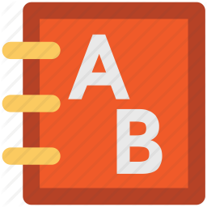

Английский
Английский язык мы начинаем преподавать деткам с 8ми месяцев и возрастного ограничения у нас нет.
На сегодняшний день иностранный язык это не новинка, а скорее необходимость и повседневность. Английский язык в нашем саду проходит в виде игр, песен, зарядок, чтения книг в нашей библиотеке ,используются аудио и видео материаллы, совмещая несколько предметов преподавая на английском , на прогулке и в повседневном обиходе. Имея опыт Европы и Америки мы создаем максимально комфортную зону для преодоления языкового барьера и дети незадумываясь общаются свободно на английском языке не смотря что он не является для них родным. Так же на ряду с высококвалифицированными педагогами мы приглашаем к нам гостей иностранцев что бы детки слышали носителя английского языка и чувствовали себя свободно.
В нашем саду “Киндерленд” проходят увлекательно все занятия и английский не исключение, детки с удовольствием ходят на занятия и выдают дома мамам и папам на английском языке разные интересные моменты.